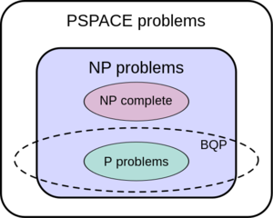

عجز الحوسبة الكلاسيكية [1]
في الحاسوب الكلاسيكي يتم تصنيف المسائل الحاسوبية إلى متعددة الحدود (polynomial) ومشكلات غير متعددة الحدود (Non polynomial) والاخيرة لا يمكن حلها في وقت متزايد ( polynomial time) باستخدام الحاسوب الكلاسيكي لكن اذا كان لدينا الحل فبامكاننا التأكد من صحته بسرعة باستخدام الحاسوب الكلاسيكي ( Verification is fast by the classical computer).
في العام 1993 قام العالمان إيثان برنشتاين(Ethan S Bernstein) وأوميش فازيراني باستحداث تصنيف جديد للمسائل الحاسوبية وهو مسائل كمية متعددة الحدود محدودة الخطأ“bounded-error quantum polynomial time" اختصارا (ك.م.ا.م) BQP وتمكنوا من إثبات بأن جميع المسائل متعددة الحدود (polynomial) هي عبارة عن مجموعة جزئية من ال (ك.م.ا.م) BQP وبالتالي بان الحاسوب الكمي بإمكانه حل جميع المسائل التي يتمكن منها الحاسوب الكلاسيكي.
لاحقا قاموا بتعريف تصنيف جديد وهو التسلسل الهرمي متعدد الحدود (Polynomial Hierarchy) وهو تعميم لمجموعة المشكلات غير متعددة الحدود (Non polynomial) باضافة المزيد من التعقيد أو الشروط على المسألة.
لاحقا اكشتف العلماء مسألة موجودة في مجموعة ال(ك.م.ا.م) BQP وليست موجودة في مجموعة التسلسل الهرمي الصعبة متعددة الحدود(PH) مما يثبت بأنه إذا كانت الحواسيب الكلاسيكية قادرة على حل جميع المسائل غير متعددة الحدود(Non polynomial) فإنه الحواسيب الكمية ستبقى أمامها ومتفوقة عليها في العثور على مسألة في مجموعة (ك.م.ا.م) BQP وليست موجودة في مجموعة المسائل الهرمية متعددة الحدود (PH) مما يثبت بأن الحواسيب الكمية تتفوق على الحواسيب الكلاسيكية عندما نتحدث عن قدرة الحوسبة. [7].
